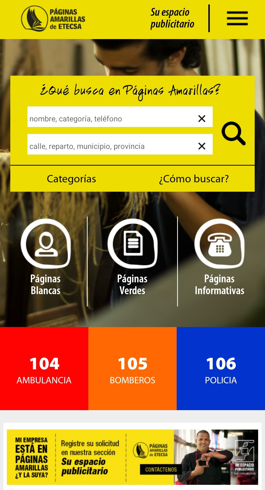

Additional Technologies: Coroutines & Flow, LiveData, Navigation Component, Unit Testing (JUnit, Mockk), REST APIs, Custom Views
Mobile developer with a passion for creating efficient, user-friendly applications that solve real-world problems. My expertise spans from complex GIS systems to user-centric news applications, with a strong focus on offline-first architecture and optimal performance. Based in Seoul, Korea, I bring a unique international perspective to mobile development, with recent research experience in AI/ML integration.
A comprehensive offline-capable business directory app for Cuba
Search businesses, access emergency numbers and business directories
Find government procedures, requirements and service schedules

Browse phone services, customer support and international calls

Explore mobile internet plans, connection settings and service options

Request advertising space, promote business and increase visibility

Patent-pending federated learning algorithm improving random forest accuracy
I'm always interested in collaborating on innovative mobile projects or discussing technology. Feel free to reach out!